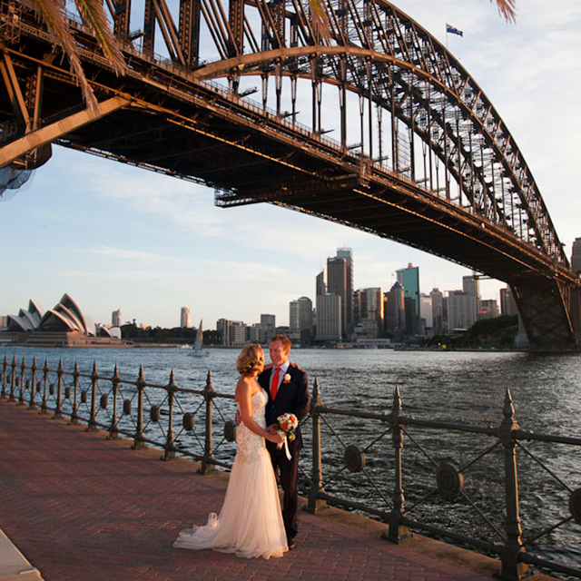
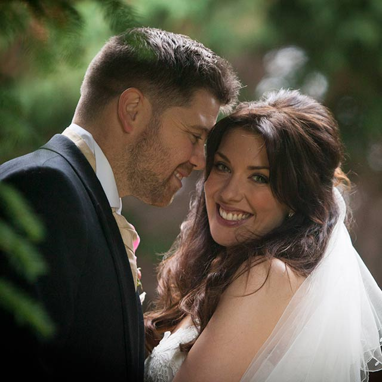
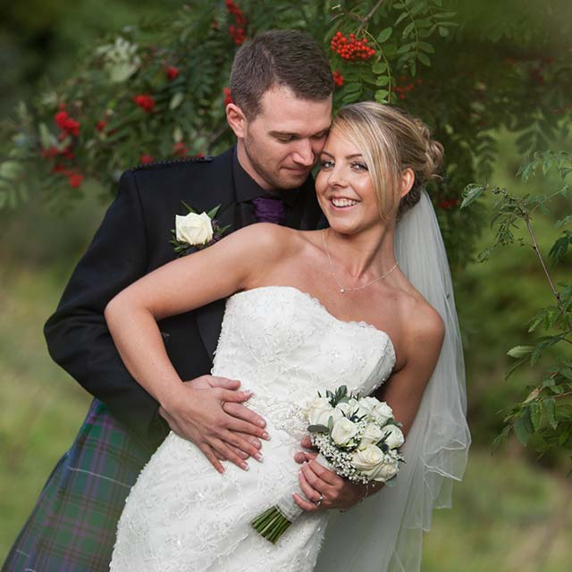

Welcome to Arrow Photography
The 2 important parts to capturing a photograph - – — the subject and the location. At Arrow Photography we know how to emphasise the best in both!
We have been professional photographers for 15 years, specialising in modern and stylish wedding photography. You will want photographs of people or event that are creative, romantic and artistically taken… which is why we leave nothing to chance and photograph everything that is magical just as you wish it to be. Your photographs will be something that you, your families and friends will treasure forever.
Our style is friendly and relaxed enabling us to capture all those special moments throughout the day with the minimum of fuss.
Recent Events
Adele and John's Wedding

“Adele and John” wanted some wedding photos of just themselves around Sydney Harbour with the Sydney Opera House, Botanical Gardens and Sydney Harbour Bridge as the backdrop. We met up with them one sunny afternoon on the Sydney Opera House steps and spent some time capturing some greats shots of them both in these awe-inspiring locations. After shooting in front of the Opera House and Bridge, we walked into Sydney's Botanical Gardens with the city behind them and captured some great natural moments between the two of them. After a glass or two of Champagne, we wandered through the gardens to Mrs Macquaries Point and photographed the bride and groom with the iconic Opera House and Harbour Bridge behind them.
More…
Anna and Kevin's Wedding

"Anna and Kevin's wedding" was at St. Wilfrid's Church, Calverley and the wedding reception took place at the Mercure Parkway Hotel, Leeds. All the groomsmen were in kilts as the groom is Scottish and there was definitely a Scottish theme to the day. After the ceremony we were lucky enough for some sunshine to come out just at the right moment so the bride and groom could have the roof down on the wedding car. We worked quickly in the short time we had sun to capture some great photos of the bride and groom through the trees with the sunshine behind outside the Mercure Parkway Hotel. The wedding speeches had everyone in stitches as the best man had prepared a slide-show of photos from the stag do!
More …
Jane and Richard's Wedding

"Jane and Richard's wedding" was at St. Wilfrid's Church, Calverley and the wedding reception took place at the Mercure Parkway Hotel, Leeds. All the groomsmen were in kilts as the groom is Scottish and there was definitely a Scottish theme to the day. After the ceremony we were lucky enough for some sunshine to come out just at the right moment so the bride and groom could have the roof down on the wedding car. We worked quickly in the short time we had sun to capture some great photos of the bride and groom through the trees with the sunshine behind outside the Mercure Parkway Hotel. The wedding speeches had everyone in stitches as the best man had prepared a slide-show of photos from the stag do!